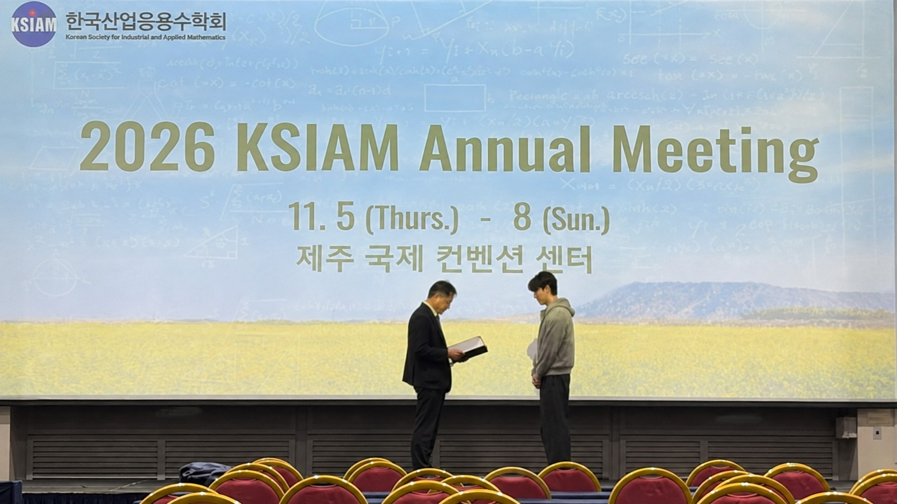
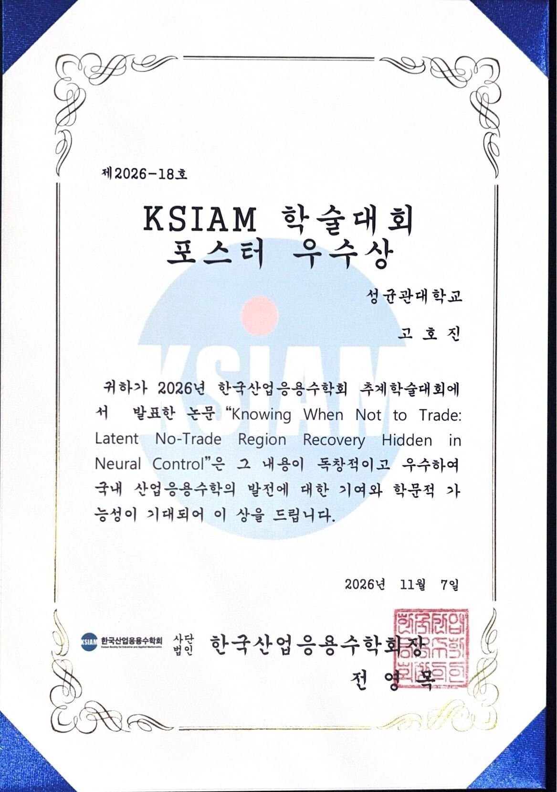

Hojin Ko received an Outstanding Poster Award at the 2026 Korean Society for Industrial and Applied Mathematics (KSIAM) Annual Meeting, held at Jeju Convention Center from November 5 to 8. The award was presented on November 7.
His award-winning poster was titled “Knowing When Not to Trade: Latent No-Trade Region Recovery Hidden in Neural Control.”
This follows his Outstanding Poster Award at the KMS Fall Meeting 2026. Congratulations to Hojin on another excellent achievement! 👏

Hojin Ko at the KSIAM award ceremony in Jeju.

Outstanding Poster Award certificate, November 7, 2026.
See all MLFE Lab presentations at the KSIAM Fall Conference 2026.